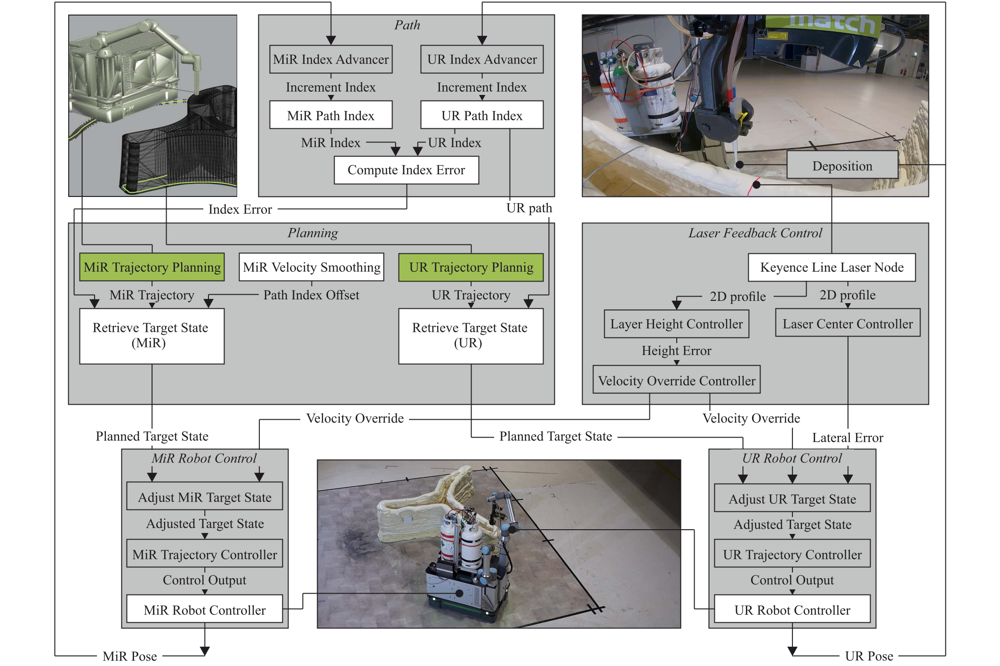
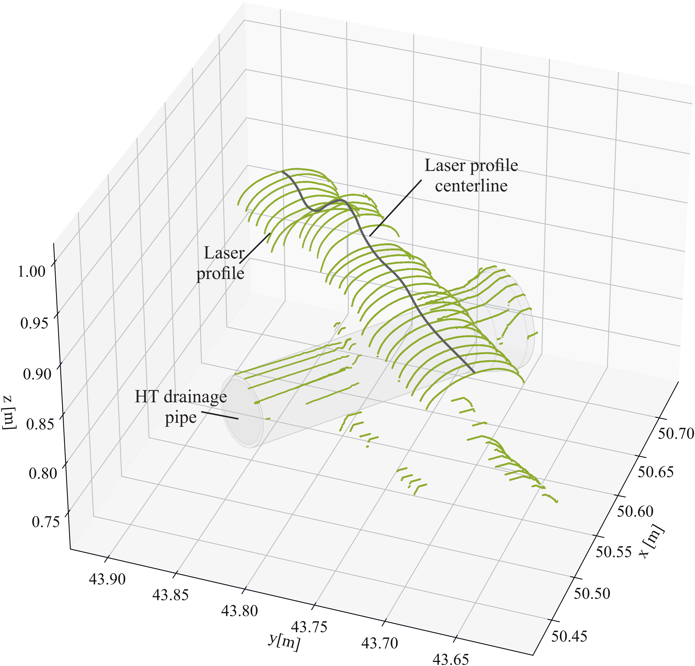

Chapter overview
Robot Control
The control framework coordinates the mobile platform, the manipulator, and the material process within a unified architecture. It combines trajectory tracking, path-index-based progression, and laser-feedback-driven compensation in order to maintain a stable deposition process despite platform motion, process disturbances, and localization inaccuracies.
- The MiR and UR trajectories are tracked by dedicated controllers whose motions are tightly coupled, since any movement of the mobile base directly induces motion at the TCP.
- A laser-feedback module measures the previously deposited strand and provides both a layer-height error for process correction and a lateral error for geometric alignment.
- The velocity override controller adapts the feedforward motion online, allowing the system to increase or decrease local material deposition by modifying the traversal speed.
- Additional compensation is required within the UR controller to counteract TCP motion induced by platform translation and rotation while preserving the process-specified TCP trajectory.

